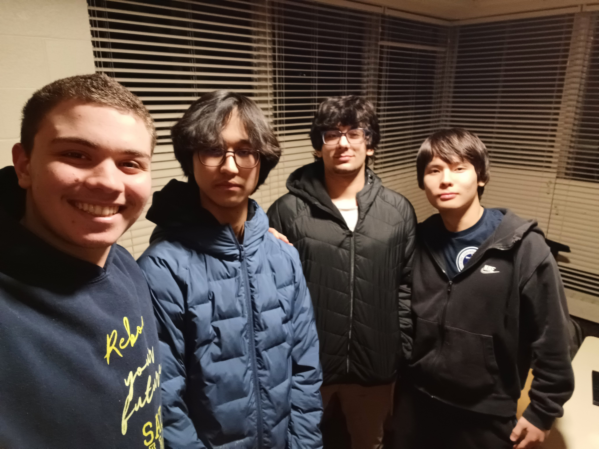
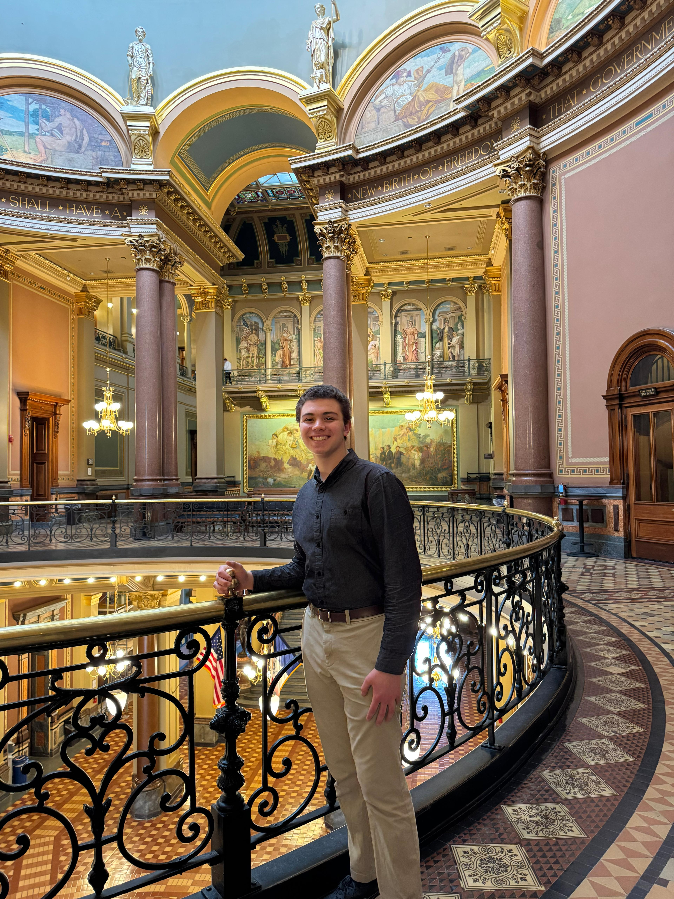
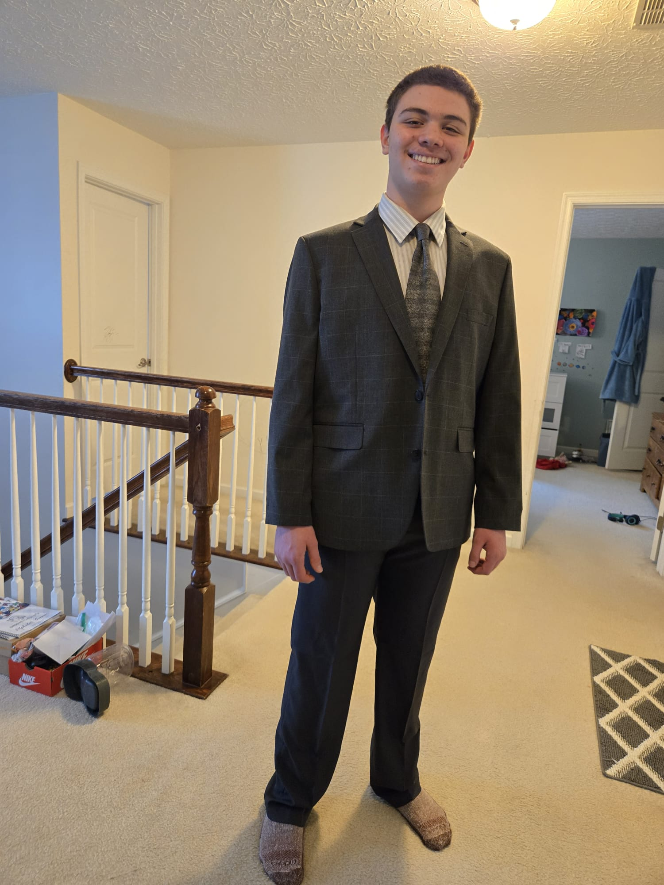
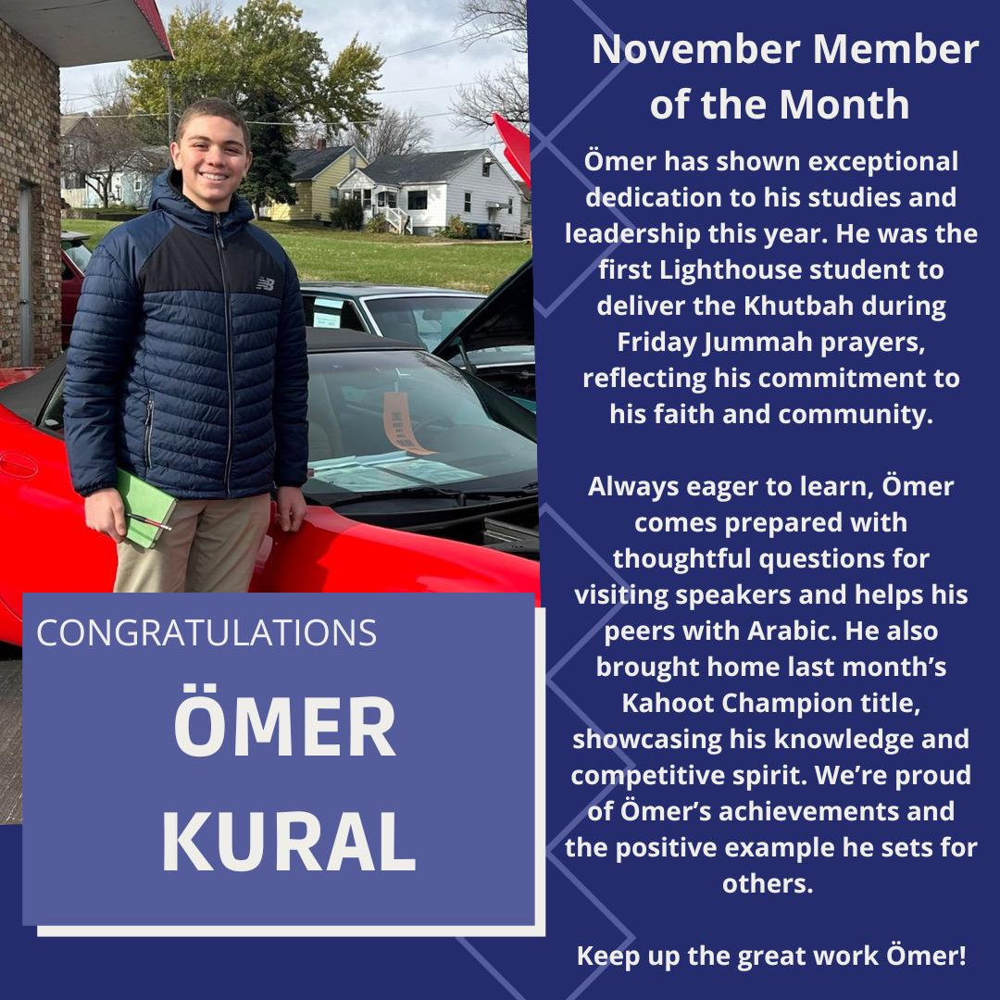
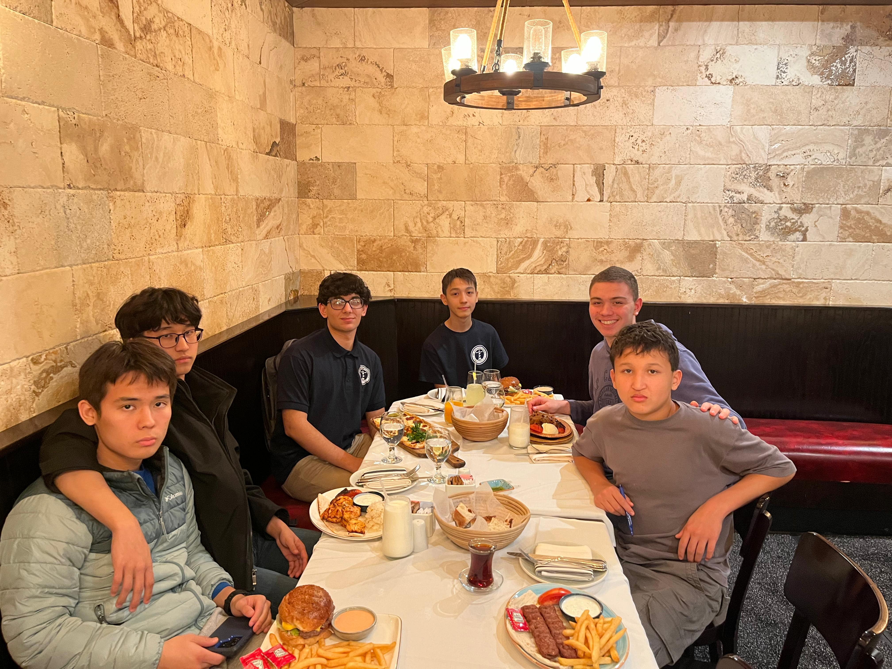
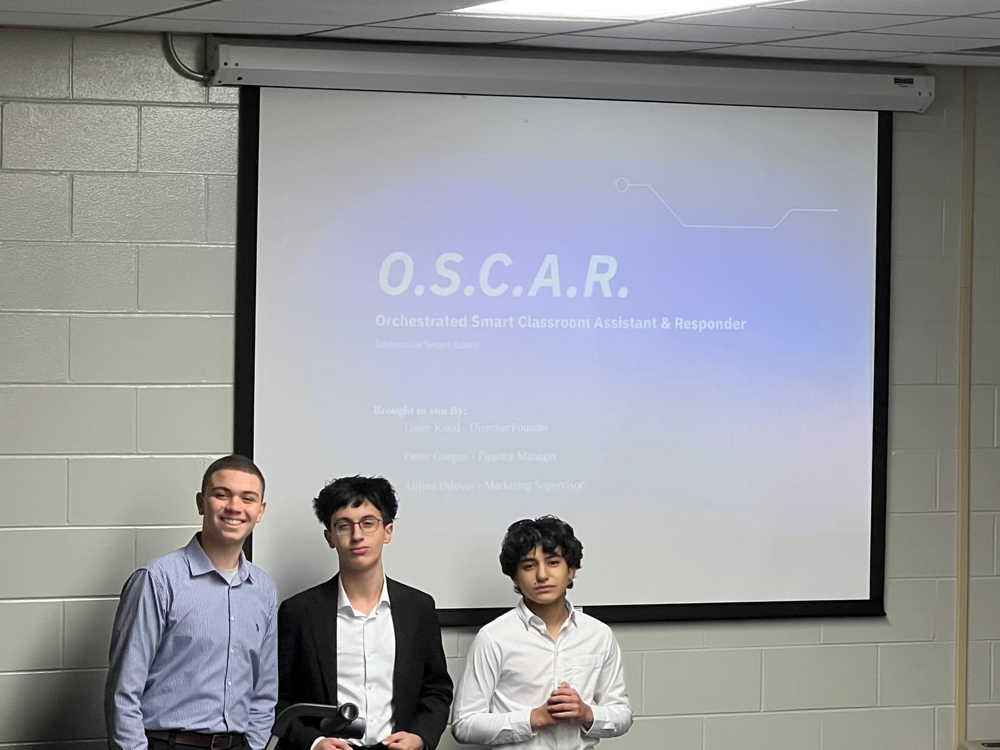
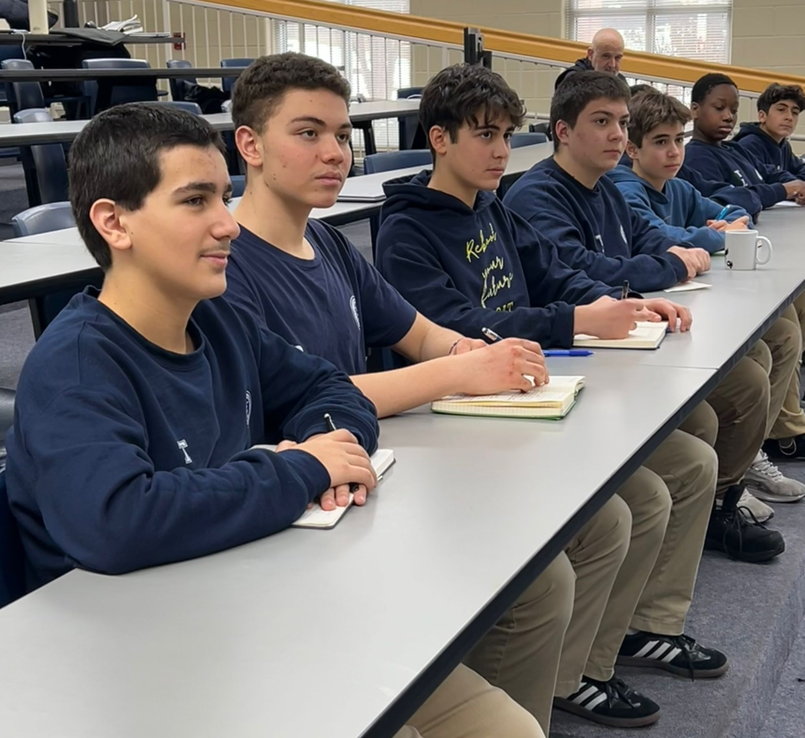
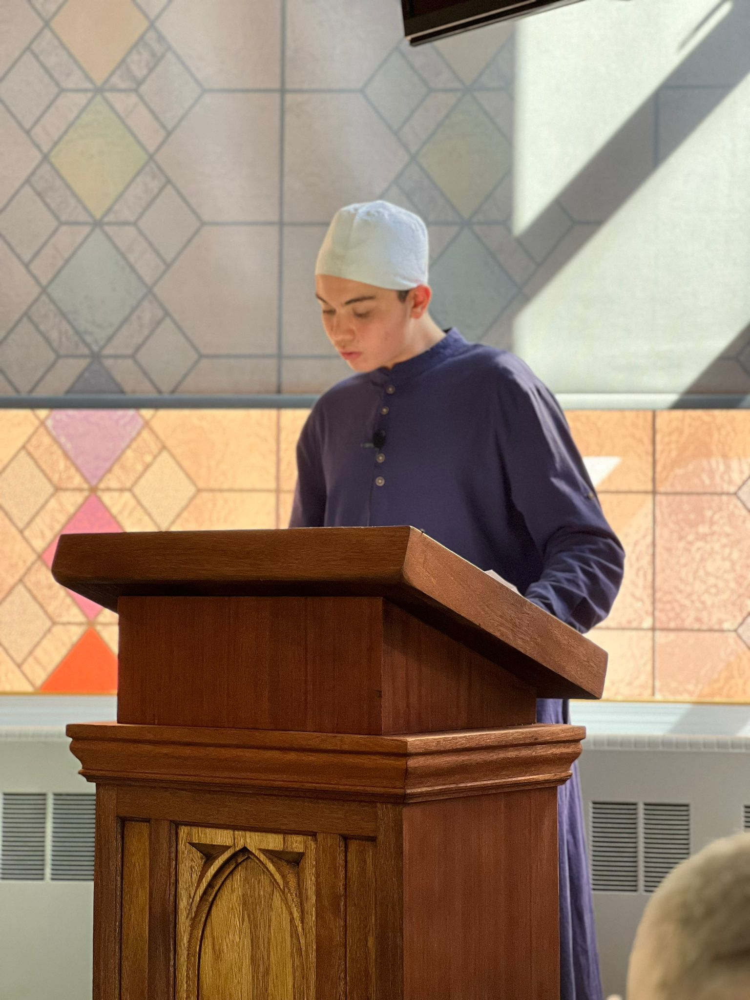
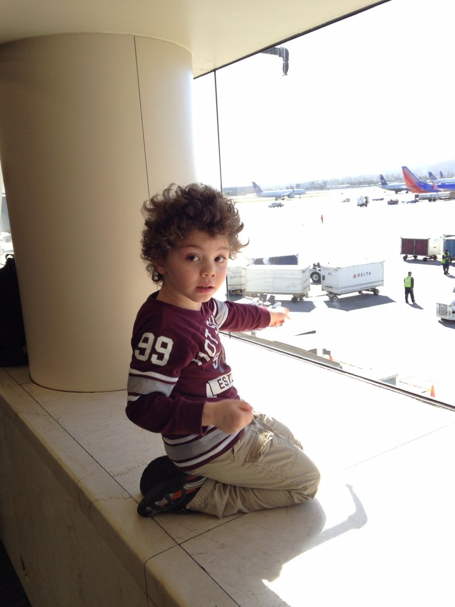

Leadership
Head RA
One of the two Head RAs on the dormitory side, with recurring leadership responsibility and direct coordination with school administration.
Read more
I am Omer Kural, a student developing at the intersection of engineering, biophysics, computation, leadership, and public communication.
Selective long-term program focused on biophysics, microscopy, engineering design, and computational analysis.
Daily interaction with administration and weekly student progress meetings in a residential leadership role.
TA for Foundations of Islamic Faith and Prophet’s Life and Personality.
Planned double major in Mechanical Engineering and Biochemistry, with sustained interest in Neuroscience.

Research-minded, technically curious, leadership-tested, and building toward a serious scientific and engineering future.
In 8th grade, I attended Fountain Academy in Chicago, which was my first experience at a boarding school. That year gave me an early introduction to structured academic life away from home and helped develop discipline, adaptability, and independence.
In 9th grade, I joined The Lighthouse Schools in Iowa during the school’s very first year. Being part of a school that had just opened meant that everything felt foundational. I was not simply joining an established environment; I was growing with a new institution.
Since then, my path has become increasingly defined by academic ambition, technical curiosity, responsibility in leadership roles, and a strong interest in serious long-term work. I am especially motivated by opportunities that combine science, engineering, communication, and mentorship.
My academic direction is toward a planned double major in Mechanical Engineering and Biochemistry, with strong interest in Neuroscience. What appeals to me most is the chance to work across fields rather than remain limited to only one way of thinking.

This section is intentionally organized by year so it stays detailed without becoming overwhelming. It shows what I took, what I am taking now, and what I plan to take next.
My first boarding-school year in Chicago.
My freshman year, during the opening year of Lighthouse Schools.
My current year combines advanced science, computing, communication, and religious studies.
Planned to make my course load much more directly aligned with engineering and science.
Senior-year planning is not finalized yet.
The progression is intentionally becoming more rigorous and more focused.
This section is intentionally structured as a clean, left-aligned list. Each accomplishment has a short label, a supporting image, and a button that opens a dedicated detail page with more explanation.
One of the two Head RAs on the dormitory side, with recurring leadership responsibility and direct coordination with school administration.
Read more
Selected as a TA for Foundations of Islamic Faith and Prophet’s Life and Personality.
Read moreatTheLighthouseSchools,thisistheschool%27sofficialpost.jpg)
Selective long-term fellowship centered on biophysics, microscopy, engineering design, and computational analysis.
Read more
A visible recognition tied to consistency, conduct, and contribution within school life.
Read more
At the end of 9th grade, I and two other students were selected to become RAs for the following year. I currently serve as one of the two Head RAs on the dormitory side.
This role includes daily meetings with administration, dorm directors, residential life coordinators, and principals about policy changes, implementation, and student feedback. I also lead my own RA group and hold weekly progress meetings focused on grades, wellbeing, and overall student development.
What makes this accomplishment meaningful is that it reflects trust, consistency, and the ability to work within real structures of responsibility. It is not just a title; it involves recurring accountability.

A direct visual tied to residential leadership.

Shows the community-building side of mentorship and leadership.
This year I was chosen as one of the school’s Teaching Assistants. I serve as the TA for Foundations of Islamic Faith and Prophet’s Life and Personality.
That role reflects more than just academic strength. It also suggests professionalism, reliability, and the ability to support a classroom environment in a structured way.
It fits well with the broader profile presented on this site: I am not only interested in learning for myself, but also in being useful in environments where responsibility matters.
The Lighthouse Biophysics Research Fellowship is a selective extracurricular research program dedicated to advanced study in biophysics, quantitative biology, microscopy, engineering design, and computational analysis.
The fellowship is designed for students prepared to think critically, work with precision, and contribute to projects that extend beyond a single semester or school year. It is intended as a long-term commitment through graduation, with strong emphasis on maturity, integrity, academic discipline, and laboratory standards.
This accomplishment belongs with the other major achievements on the site because it shows alignment between my interests and a serious, selective, research-oriented program.
Being recognized as Student of the Month matters because it reflects a broader pattern rather than a single isolated moment. Recognition like this usually points to consistency, visible contribution, and a dependable presence within school life.
On this site, it works best as supporting evidence that my profile is not just self-described. There are also visible signs that others have noticed and trusted my contribution.
At the end of 9th grade, I and two other students were chosen to serve as RAs for the following year. I now serve as one of the two Head RAs on the school’s dormitory side.
That role includes daily meetings with administration, dorm directors, residential life coordinators, and principals concerning policy changes, implementation, and student feedback.
Each RA has a group, and I also have my own group. I hold weekly meetings with them to check on grades, wellbeing, and overall progress. At times, I also find sponsors for the group and take them out to dinner.
One of the strongest images for showing leadership in context.
Mentorship includes creating a healthy group culture, not just enforcing rules.

Represents the relationships and social trust built during the early Lighthouse period.
Like the accomplishments section, this page is now structured as a clean list. Each project has a short summary and a detail page for a fuller explanation.
A public-facing business project presentation completed with partners.
Read more
Formal presentation experience that supports the professional and public-speaking side of my portfolio.
Read more
Hands-on technical work in modeling, printing, troubleshooting, and building.
Read more
The OSCAR project is important on this site because it shows more than classroom participation. It shows collaborative work, preparation, presentation, and the ability to communicate an idea clearly in a more formal setting.
It supports the larger theme of the portfolio: I work best when I can combine structure, communication, and initiative.
My Lighthouse presentation images and video are included because they represent the public-facing side of my profile. They show comfort with formal communication, visual professionalism, and confidence presenting in front of others.
This complements the more technical and leadership-oriented parts of the portfolio by showing that I can also explain and represent ideas clearly.
A major part of my technical identity comes from years of hands-on work with 3D printing and CAD. This includes modeling, machine maintenance, troubleshooting, material choice, and practical problem-solving.
It belongs in the projects area because it is an actual body of recurring technical work rather than a vague interest. It also connects directly to my long-term interest in engineering and research-heavy environments.
I chose images that support the overall professional story: presentations, school milestones, group leadership, and clean personal photos. I left out images that would make the site feel too random or too crowded.

A clean contextual image connected to the school environment.

A direct reference to the earliest boarding-school chapter.

Helps connect the full story from 8th grade onward.

Supports the career-oriented side of the portfolio.

Another image that shows confidence in front of people.

A more personal archival image that adds depth without weakening professionalism.